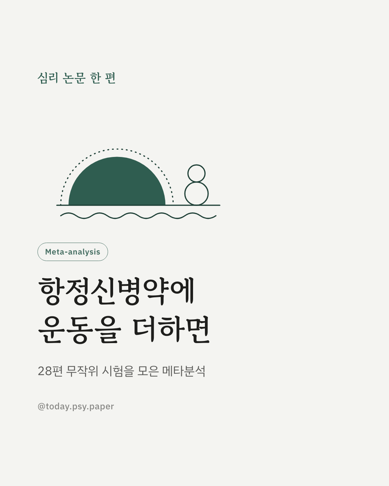
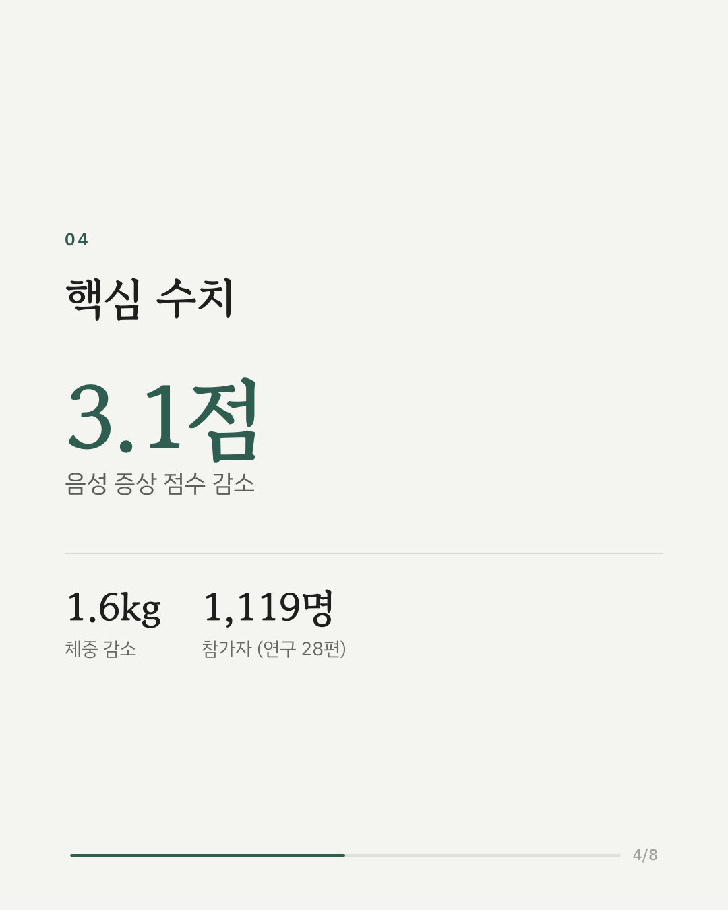
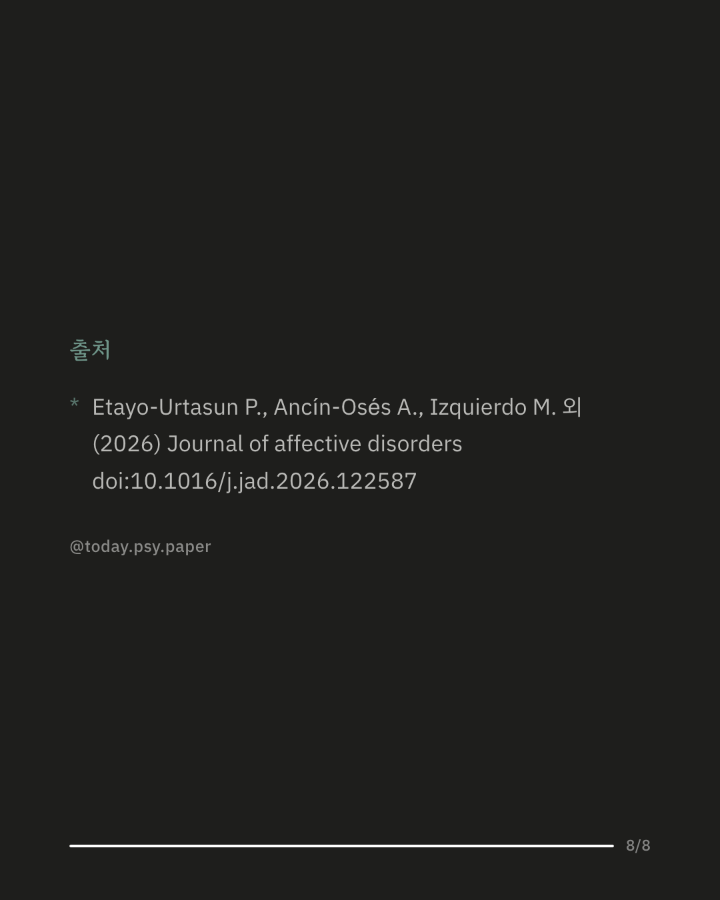

조현병 등 정신증 치료의 기본인 항정신병약에는 체중 증가, 혈당 상승 같은 대사 부작용이 자주 따라옵니다. 이 메타분석은 전문가가 지도하는 운동이 증상과 부작용 모두에 도움이 되는지 살펴봤습니다. 항정신병약을 복용 중인 성인을 대상으로 한 무작위 배정 연구 28편, 1,119명의 결과를 모았습니다. 운동한 쪽에서 의욕 저하·감정 무뎌짐 같은 음성 증상 점수가 평균 3.1점 낮았고, 전반적인 증상 점수도 함께 줄었습니다. 환청·망상 같은 양성 증상은 뚜렷한 변화가 없었습니다. 몸무게는 평균 1.6kg, 허리둘레는 1.4cm 줄었지만 혈압과 공복 혈당은 달라지지 않았습니다. 운동은 항정신병약과 함께 쓰는 보조 방법이 될 가능성이 있습니다. 다만 줄어든 폭이 환자가 체감할 만한 기준에는 미치지 못했고, 혈압·혈당·콜레스테롤에 대한 근거는 적고 서로 엇갈렸습니다. 출처: Journal of Affective Disorders (2026), 'Exercise to enhance antipsychotic effectiveness and mitigate metabolic harm: systematic review and meta-analysis' DOI: 10.1016/j.jad.2026.122587 #임상심리 #정신건강정보 #심리학연구 #논문리뷰 #조현병 #항정신병약 #운동효과
python3 publish.py 42838230